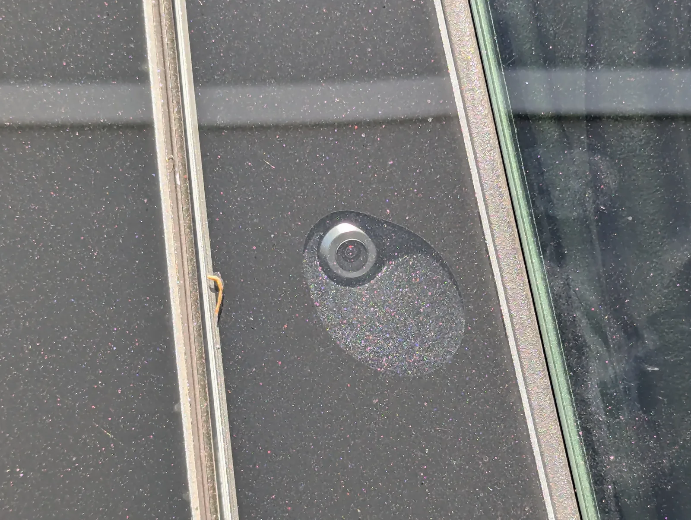
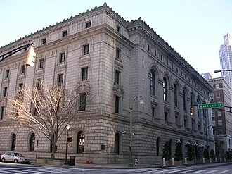

▲ 사고 차량과 같은 2019년형 테슬라 모델S. 오토파일럿이 작동 중이던 이 차량은 정지신호와 점멸 신호를 지나쳐 시속 약 100km로 주차 차량과 충돌했다
1. 2019년 키라고, T자형 교차로에서 벌어진 사고
사건은 2019년 4월, 미국 플로리다 키라고의 한 T자형 교차로에서 벌어졌다. 조지 맥기는 오토파일럿을 켠 테슬라 모델S를 운전하던 중 손에서 휴대폰을 떨어뜨렸고, 이를 주우려 고개를 숙였다. 그 사이 차량은 정지신호와 점멸하는 빨간불을 그대로 통과해 시속 약 100km(62마일)로 갓길에 주차돼 있던 쉐보레 타호와 충돌했다. 이 사고로 타호 옆에 서 있던 나이벨 베나비데스 레온(당시 22세)이 숨졌고, 함께 있던 딜론 앙굴로(당시 26세)는 중상을 입었다.

▲ 오토파일럿 작동 화면 예시. 사고 당시 맥기는 운전대에 손을 얹은 상태였지만, 시선은 떨어뜨린 휴대폰을 향해 있었다 ⓒ Wikimedia Commons
2. "핸들은 잡았지만, 보고 있지 않았다" — 감지 시스템의 허점
이 사건이 주목받는 이유는 운전자가 완전히 손을 놓고 있었던 게 아니라는 점이다. 테슬라의 오토파일럿은 오랫동안 스티어링휠에 가해지는 토크(힘)를 감지해 운전자의 '손 감지 여부'를 판단하는 방식을 써왔다. 이는 어디까지나 운전자가 전방을 주시하고 있을 것이라는 전제 아래 만들어진 대리 지표일 뿐, 실제로 운전자가 도로를 보고 있는지까지 확인하는 장치는 아니었다.
맥기의 차량은 그가 주의를 기울이지 않으면 경고음을 울렸고, 이를 무시하면 오토파일럿이 해제되는 '스트라이크아웃' 기록을 남겼다. 맥기는 차량을 보유한 3개월 동안 총 23번의 스트라이크아웃을 받았는데, 사고가 난 바로 그날의 주행에서도 이미 한 차례 스트라이크아웃이 발생한 뒤였다. 시스템이 운전자의 부주의 징후를 여러 차례 포착하고도, 최종적으로 사고를 막지는 못한 셈이다.
📍 '핸즈온' 감지와 '아이즈온' 감지는 다르다
스티어링휠 토크 감지(핸즈온)는 운전자가 손을 얹고 있다는 사실만 확인할 뿐, 시선이 도로를 향해 있는지(아이즈온)는 판단하지 못한다. 실제로 오렌지나 물병을 운전대에 끼워 감지를 속이는 사례가 알려지기도 했다. 최근에는 실내 카메라로 운전자의 시선을 추적하는 방식이 도입되는 추세지만, 2019년 사고 당시 차량에는 이런 기능이 없었다.

▲ 테슬라 차량 B필러에 내장된 오토파일럿 카메라. 스티어링휠 토크 감지와 달리, 운전자 시선까지 살피는 실내 카메라 기반 감지는 이후 세대 차량부터 도입됐다 ⓒ Mliu92, Wikimedia Commons(CC BY-SA 4.0)
3. 배심원단의 판단 — 테슬라 33%, 운전자 67%
2025년 8월, 미국 마이애미 연방법원 배심원단은 이 사고에 대해 테슬라에 33%, 운전자 맥기에게 67%의 책임이 있다고 평결했다. 오토파일럿 관련 치명적 사고에 대해 연방 배심원단이 테슬라의 책임을 인정한 첫 사례로 기록됐다. 배심원단은 보상적 손해배상금 약 4,300만 달러에 더해, 징벌적 손해배상금 2억 달러를 별도로 평결했다. 이를 합친 총 배상액은 2억 4,300만 달러(약 3,500억원)에 달한다.
| 항목 | 내용 |
|---|---|
| 사고 발생 | 2019년 4월, 플로리다 키라고 |
| 배심원 평결 | 2025년 8월, 마이애미 연방법원 |
| 책임 비율 | 테슬라 33% : 운전자 67% |
| 보상적 손해배상금 | 약 4,300만 달러 |
| 징벌적 손해배상금 | 2억 달러 |
| 총 배상액 | 2억 4,300만 달러(약 3,500억원) |
| 판결 확정 | 2026년 2월, 베스 블룸 판사 |

▲ 애틀랜타의 엘버트 P. 터틀 연방항소법원 건물. 테슬라는 이곳 제11연방순회항소법원에 항소했다 ⓒ Wikimedia Commons
4. 항소전 돌입 — 테슬라 "징벌적 배상 상한 위반" 주장
테슬라는 2026년 2월 판결이 확정된 뒤에도 불복해, 그해 3월 16일 제11연방순회항소법원(애틀랜타)에 항소했다. 테슬라 측은 전 미국 법무차관 폴 클레멘트와 테드 부트로스 등 유수의 항소심 전문 변호인단을 꾸려, 플로리다주 법상 징벌적 손해배상금이 보상적 손해배상금의 3배를 넘지 못하도록 한 상한 규정을 위반했다는 점과 원고 측 전문가 증언의 신빙성을 문제 삼고 있다. 앞서 테슬라는 1심에서도 "일론 머스크의 오토파일럿 성능 관련 발언이 배심원을 오도했다"고 주장했으나 받아들여지지 않은 바 있다. 원고 측은 전 미국 송무차관 엘리자베스 프렐로가가 대리하고 있으며, 항소심 구두변론은 9월 28일부터 10월 2일까지 마이애미에서 진행될 예정이다.

▲ 최신 테슬라 차량들은 실내 카메라 기반의 운전자 주시 감지 기능을 추가해왔지만, 이번 소송의 대상이 된 2019년형 모델S에는 해당 기능이 없었다 ⓒ Wikimedia Commons

▲ 테슬라 차량의 스티어링휠. 오토파일럿은 이 휠에 가해지는 힘으로 운전자의 '손 감지' 여부만 판단했을 뿐, 시선이 도로를 향하는지는 확인하지 못했다 ⓒ Wikimedia Commons
5. 운전자 책임과 제조사 책임, 어디까지가 몫인가
이번 사건은 운전자 보조 시스템을 둘러싼 책임 소재 논쟁에서 상징적인 이정표로 꼽힌다. 배심원단이 운전자에게 더 큰 책임(67%)을 물으면서도 제조사에게도 3분의 1의 책임을 인정했다는 점에서, "운전자가 최종 책임자"라는 원칙과 "제조사가 시스템의 한계를 충분히 알리고 안전장치를 갖췄는가"라는 물음이 동시에 다뤄진 사례라는 평가가 나온다. 그동안 오토파일럿과 관련한 다른 소송 상당수가 재판 없이 합의로 종결됐던 것과 달리, 이 사건은 연방 배심원 평결까지 이어졌다는 점에서도 이례적이다. 이번 항소심 결과는 앞으로 이어질 운전자 보조 시스템 관련 소송들에도 영향을 미칠 것으로 전망된다.
✅ 테슬라 오토파일럿 배심원 평결, 이것만은 확인하세요
· 2019년 4월 플로리다 키라고 사고, 운전자는 휴대폰을 줍다 정지신호 통과
· 운전자는 스티어링휠에 손을 얹고 있었지만 시선은 도로를 벗어나 있었음
· 사고 당일 포함 3개월간 23차례 오토파일럿 '스트라이크아웃' 기록
· 2025년 8월 배심원 평결: 테슬라 33% : 운전자 67% 책임, 총 2억 4,300만 달러 배상
· 2026년 2월 판결 확정, 테슬라는 3월 제11연방순회항소법원에 항소 / 구두변론 9월 28일~10월 2일 예정
6. 정리
이번 사건은 "운전자가 손을 얹고 있었다"는 사실만으로는 책임 논쟁이 끝나지 않는다는 것을 보여준다. 시스템이 손의 존재는 감지했지만 시선의 부재까지는 잡아내지 못했고, 그 틈에서 벌어진 사고에 배심원단은 제조사에도 33%의 책임을 물었다. 2,430억원대 배상 판결이 확정된 뒤에도 테슬라가 항소에 나서면서, 운전자 보조 시스템을 둘러싼 법적 책임 공방은 당분간 계속될 전망이다.